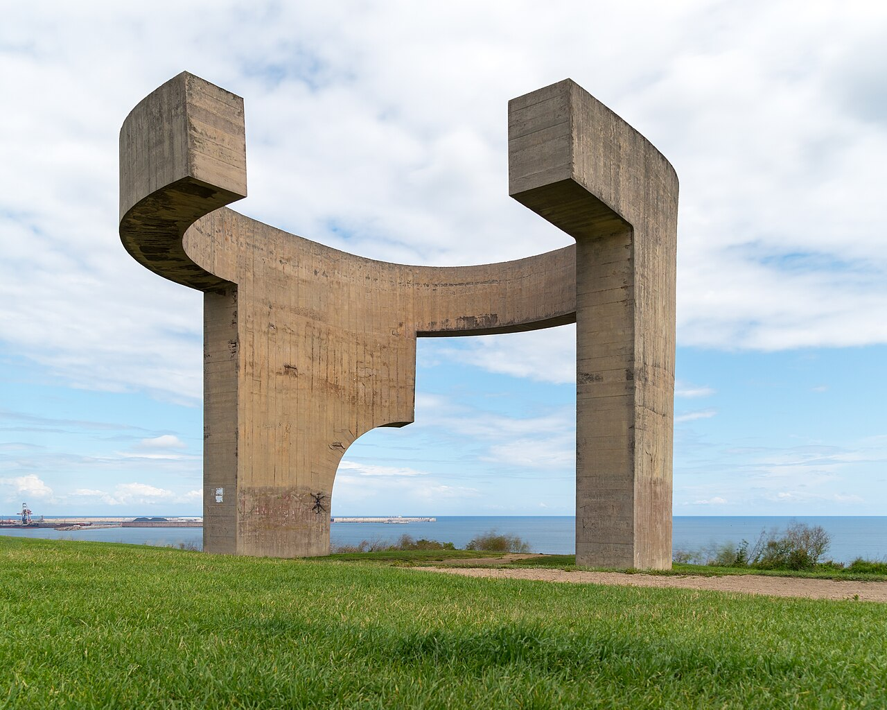

6dom
Gijón · mar y sidra
Aterrizar y oler a salitre
Llegamos a media tarde, así que este día es de pasear sin mirar el reloj y empezar con la sidra.
- Callejear por Cimadevilla, el barrio de pescadores.
- Ver atardecer en el Elogio del Horizonte de Chillida, que suena cuando sopla el viento.
- Paseo por la playa de San Lorenzo hasta la iglesia de San Pedro.
- Curiosear el mercadillo navideño de la Plaza Mayor.
- Fabada o cachopo en Río Astur y una copa en Varsovia.